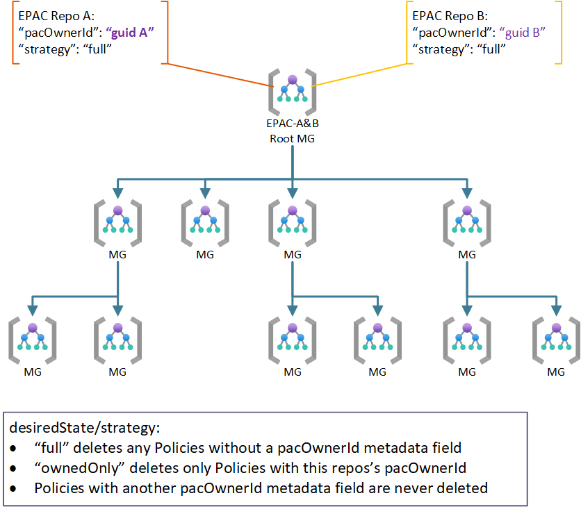

Desired state strategy
Desired State strategy enables shared responsibility scenarios. the following documents the archetypical use cases. For complex scenarios it is possible to combine multiple use cases (e.g., Use case 2a and 3, use case 1 and 2a, ...).
Use Case 1: Centralized Team
This original (previously the only) use case assumes one team/repo manages all Policies in a tenant or multiple tenants. You should not have any of the following elements in global-settings.jsonc:
inheritedDefinitionsScopesdesiredState
Use Case 2: Shared Responsibility
In a shared responsibility model multiple teams manage the same tenant(s) at the same scope. Additionally, a variant of this use case is well suited to what previously was called brownfield which needs to preserve Policy resources deployed prior to EPAC. The following diagram shows two EPAC solutions managing the same root (tenant). Other Policy as Code solutions can also participate if the solution sets metadata.pacOwnerId.

For standard behavior where each repo manages, no additional entries in global-settings.jsonc are necessary since the default strategy full is the default. full deletes any Policy resources without a pacOwnerId; however, id does not delete Policy resources with a different pacOwnerId.
You may add the following JSON for clarity/documentation of the default behavior.
"desiredState": {
"strategy": "full",
}
Use Case 3: Brownfield Transition
While transitioning to EPAC, existing Policy resources may need to be kept. Breaking change: Previously this was accomplished with the brownfield variable in the pipeline used to set the SuppressDeletes flag on the planning script. Unfortunately, the previous approach was to course- grained, preventing an EPAC solution to remove its own deprecated Policy resources. Setting desiredState to ownedOnly allows EPAC to remove its own resources while preserving brownfield instances.
"desiredState": {
"strategy": "ownedOnly",
}
Use Case 4: Hierarchical Organization
The hierarchical model allows a central team to manage the commonality while giving parts of the organization a capability to further restrict resources with Policies. This is a common scenario in multi-national corporations with additional jurisdictional requirements (e.g., data sovereignty, local regulations, ...).
Additionally, it is possible for a solution at a child scope to inherit Policy definitions.
Repo A is managed the same as in use cases 1, 2 and 2a. Repo C sets sets the same as repo B in use case 2 or 2a. If inheriting Policy definitions from the parent EPAC solution, add inheritedDefinitionsScopes to global-settings.jsonc. Inherited definition scopes used but not managed by this repository, scopes must be visible from deploymentRootScope.
"inheritedDefinitionsScopes": [],
"desiredState": {
"strategy": "full",
}
Use Case 5: Exclude some Scopes and Policy Resources
In rare cases you may need to exclude individual child scopes, or Policy resources from management by an EPAC solution.
By default, Policy Assignments at resource groups are not managed by EPAC. Prior to v6.0, managing resource groups was to expensive. If you used the -includeResourceGroup switch in prior versions, set includeResourceGroups to true to achieve the same effect.

You can exclude any combination of scopes, Policies, Policy Sets and Policy Assignments. Simple wild cards are allowed.
"desiredState": {
"strategy": "full",
"includeResourceGroups": false,
"excludedScopes": [
// Management Groups
// Subscriptions
// Resource Groups
],
"excludedPolicyDefinitions": [
// wild cards allowed
],
"excludedPolicySetDefinitions": [
// wild cards allowed
],
"excludedPolicyAssignments": [
// wild cards allowed
]
}
Use case 6: Include Resource Groups
By default, Policy Assignments at resource groups are not managed by EPAC. Prior to v6.0, managing resource groups was to expensive. Breaking change: If you used the -includeResourceGroup switch in prior versions, set includeResourceGroups to true to achieve the same effect.
"desiredState": {
"strategy": "full",
"includeResourceGroups": true,
}
Reading List
- Setup DevOps Environment .
- Create a source repository and import the source code from this repository.
- Select the desired state strategy
- Define your deployment environment in
global-settings.jsonc. - Build your CI/CD pipeline using a starter kit.
- Optional: generate a starting point for the
Definitionsfolders: - Extract existing Policy resources from an environment.
- Import Policies from the Cloud Adoption Framework.
- Add custom Policies.
- Add custom Policy Sets.
- Create Policy Assignments.
- Import Policies from the Cloud Adoption Framework.
- Manage Policy Exemptions.
- Document your deployments.
- Execute operational tasks.